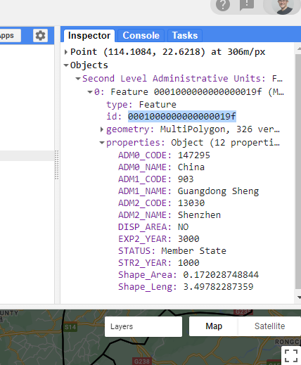
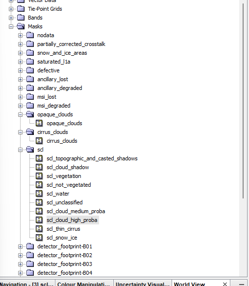
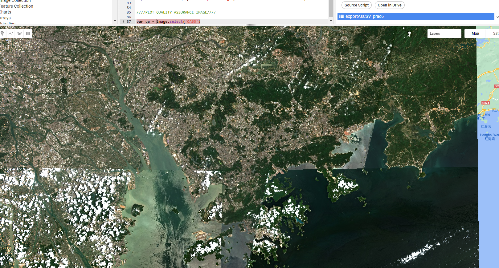
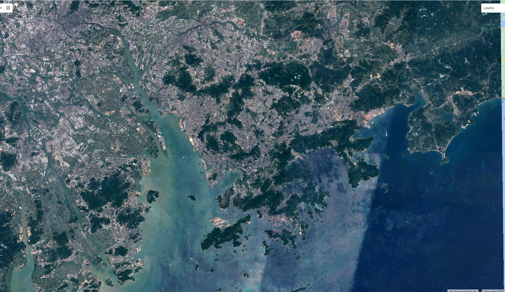
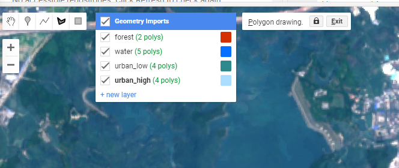
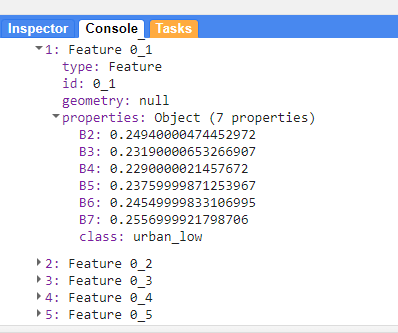
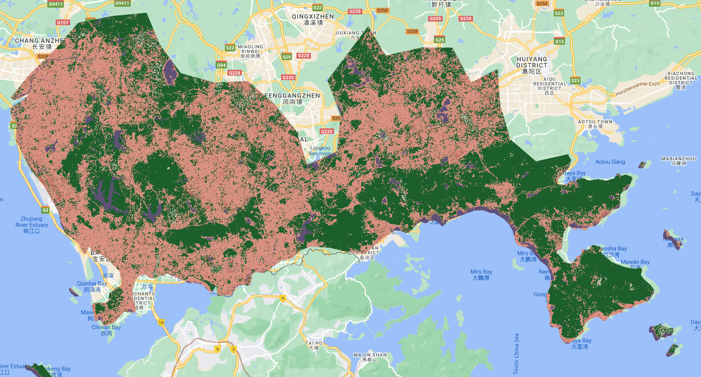
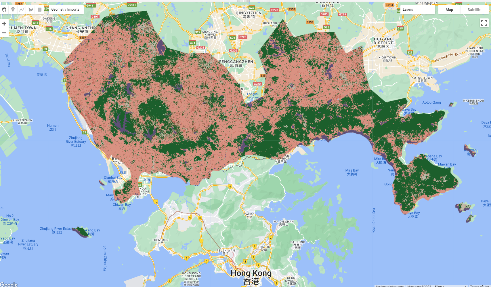

//--------------------- Load vector data --------------------------------
var dataset = ee.FeatureCollection("FAO/GAUL/2015/level2");
Map.setCenter(12.876, 42.682, 5);
var styleParams = {
fillColor: 'b5ffb4',
color: '00909F',
width: 1.0,
};
// comment this out otherwise it will just display as RBG data
//dataset = dataset.style(styleParams);
Map.addLayer(dataset, {}, 'Second Level Administrative Units');6 Classification I
6.1 Resources
This week
-
Jensen, J.R., 2015. Introductory digital image processing: a remote sensing perspective. Prentice-Hall Inc.
- Thematic Information Extraction: Pattern Recognition, Chapter 9
- supervised classification
- unsupervised classification
- Information Extraction Using AI, Chapter 10
- expert systems
- support vector machines
- random forest classifier
- Remote Sensing-Derived Thematic Map Accuracy Assessment, Chapter 13
- the error matrix
- Thematic Information Extraction: Pattern Recognition, Chapter 9
-
Cloud-Based Remote Sensing with Google Earth Engine (accessed 1.5.23).
- Chapter F2.1: Interpreting an Image: Classification
Pal, M., Mather, P.M., 2005. Support vector machines for classification in remote sensing. International Journal of Remote Sensing 26, 1007–1011.
GISGeography, 2014. Image Classification Techniques in Remote Sensing (accessed 1.5.23).
Barsi, Á., Kugler, Z., László, I., Szabó, G., Abdulmutalib, H., 2018. Accuracy dimensions in remote sensing. International Archives of the Photogrammetry, Remote Sensing & Spatial Information Sciences 42.
6.2 Data
In the last practical we uploaded our own admin boundary dataset from GADM. GEE has a massive catalog of data that we can search and just load directly into our script…
Search the GEE data catalogue for admin. You should see the FAO GAUL global admin layers and level 2 is equivalent to our unit of study from last week (although this varies based on the country).
6.3 Vector data
To load in the level 2 Global Administrative Unit Layers (GAUL) data we can use the example code….
Make a new script and copy this code in, then use the inspector to select a study area and filter the vector data to just that area. Note, that level 2 is different between different countries.
I am going to focus on Shenzhen, but select any city. My inspector shows….

To filter out my study area….
var shenzhen = dataset.filter('ADM2_CODE == 13030');Be careful here as the column is numeric not string, so the value 13030 is not in “” (like it was last week with the GADM data)
6.4 EO data
Here i’m going to use Sentinel data. If you search the data catalog for sentinel there will be a wide variety to select from, here i have gone for surface reflectance and the harmonized product that shifts newer images to be the same as that in older images, creating a consistent collection!
There is code provided for us to load us on the Harmonized Sentinel-2 MSI: MultiSpectral Instrument Level-2A catalog page
Looking at this code you will see there is a cloud mask. There are two options we have when dealing with clouds.
To filter the entire collection based on a low cloud coverage percentage per tile, like we did last week
To set a higher percentage per tile (e.g. 20) but then to use the quality assurance (QA) bands to filter the clouds per pixel. Scrolling down the bands list on the catalog page there is a description of the bitmask for the relevant QA band (QA60). Here we can see the value for each pixel. This is the same layer that we get when downloading Sentinel data, in practical one we could see this in the masks folder….

Let’s now try both approaches…
The first thing to note is that the Sentinel data is scaled by 10000 so in order to display this between 0 and 1 we need to divide collection using a function…
//create the function
var divide10000 = function(image) {
return image.divide(10000);
};- Let’s load the imagery with minimal cloud cover, now depending on your study area and the propesnity for it to be cloudy (like the UK) you will need to change the dates and compromise on the less than % of cloud cover per tile…i wanted just to get 2022 data for this composite, with less than .1% cloud cover…the latter limited the images i could select from so i changed it to 1%
//--------------------- Load Sentinel data on low cloud cover --------------------------------
var wayone = ee.ImageCollection('COPERNICUS/S2_SR_HARMONIZED')
.filterDate('2022-01-01', '2022-10-31')
.filterBounds(shenzhen) // Intersecting ROI
// Pre-filter to get less cloudy granules.
.filter(ee.Filter.lt('CLOUDY_PIXEL_PERCENTAGE',1));
var wayone_divide = wayone.map(divide10000);
var visualization = {
min: 0.0,
max: 0.3,
bands: ['B4', 'B3', 'B2'],
};
Map.centerObject(shenzhen, 10);
Map.addLayer(wayone_divide, visualization, 'wayoneRGB');Remember that if we wanted to see all the files we have here, we can export it to a .csv
Export.table.toDrive(wayone_divide, 'exportAsCSV_wayone', 'GEE', 'CSVexport', 'CSV');For example…i have a tile with an index 20220404T025539_20220404T030757_T49QGE
Here….
- The first part is the sensing data and time (the T) -
20220404T025539 - The second part is the product generation date and time -
20220404T030757 - The third part is the UTM grid reference in the Military Grid Reference System (MGRS). Where
T49is the grid zone designator
In my case this gives me 13 images…now what about increasing the cloud coverage and masking the cloud pixels
- First we need another function to mask the cloudy pixels and do the division…
// // --------------------- cloud mask --------------------------------
function maskS2clouds(image) {
var qa = image.select('QA60');
// Bits 10 and 11 are clouds and cirrus, respectively.
var cloudBitMask = 1 << 10;
var cirrusBitMask = 1 << 11;
// Both flags should be set to zero, indicating clear conditions.
var mask = qa.bitwiseAnd(cloudBitMask).eq(0)
.and(qa.bitwiseAnd(cirrusBitMask).eq(0));
return image.updateMask(mask).divide(10000);
}Then load and filter the collection with a cloud mask.Note a very similar method can be used for Landsat data
Or https://developers.google.com/earth-engine/apidocs/ee-algorithms-landsat-simplecomposite
//--------------------- Load Sentinel data with cloud mask -----------------------
var waytwo = ee.ImageCollection('COPERNICUS/S2_SR_HARMONIZED')
.filterDate('2022-01-01', '2022-10-31')
.filterBounds(shenzhen) // Intersecting ROI
// Pre-filter to get less cloudy granules.
.filter(ee.Filter.lt('CLOUDY_PIXEL_PERCENTAGE',20))
.map(maskS2clouds);
Map.addLayer(waytwo, visualization, 'waytwoRGB');In my case this produces a mixed result. I now have 62 images, but evidently the cloud mask hasn’t worked perfectly…

Now, there are two ways we can deal with this…
Take the median image from all images in our collection - meaning the middle value of each pixel that will result in the clouds being removed (as they are very reflective and will have high values)…adding
Use something more advanced for cloud detection such as s2cloudless
Taking the median returns….

6.5 Classification
The main focus here is classification, this is where we take some samples, train a model and then apply the model to the rest of the image.
In classification we are using feature vectors, which are tables. For example pixel x has band values of 200, 300, 400 and a landcover class of grass. The row of the table is a feature, the pixel values are the properties and combined they are feature vectors.
In GEE the supervised classifiers include: CART, RandomForest, NaiveBayes and SVM. GEE only allows 1 million points for sampling (to train the classifier). If you have more than this you would need to take a sample.
To start we need some training data within our study area. I’m going to clip my median imagery to my admin boundary and then take some samples. To take samples either use QGIS (and upload the .shp), Google Earth (the desktop version that has high resolution imagery) or GEE itself to generate some samples….I will use GEE.
6.5.1 Clip
// // --------------------- clip image to study area --------------------------------
var waytwo_clip = waytwo.clip(shenzhen)
Map.addLayer(waytwo_clip, visualization, 'waytwoRGB_clip');6.5.2 Training data
To select training data in GEE, click the polygon symbol and add polygons for the landcovers you want to classify. Add a new layer for each different landcover.

As you add these multi-polygons they will appear as variables at the top of your script. Next we need to merge the polygons into a feature collection…
// Make a FeatureCollection from the polygons
var polygons = ee.FeatureCollection([
ee.Feature(urban_low, {'class': 1}),
ee.Feature(water, {'class': 2}),
ee.Feature(urban_high, {'class': 3}),
ee.Feature(grass, {'class': 4}),
ee.Feature(bare_earth, {'class': 5}),
ee.Feature(forest, {'class': 6}),
]);Next, we need to set some context for the classifier - which bands are we going to use and what is the classification property - we just set it as class….
// Use these bands for classification.
var bands = ['B2', 'B3', 'B4', 'B5', 'B6', 'B7'];
// The name of the property on the points storing the class label.
var classProperty = 'class';Now, we need to pull out the data from our training areas…
// // --------------------- train data --------------------------------
// Sample the composite to generate training data. Note that the
// class label is stored in the 'landcover' property.
var training = waytwo_clip.select(bands).sampleRegions({
collection: polygons,
properties: [classProperty],
scale: 10
});When i print this variable you can see the values that have been pullout out of the data
print(training, "training")
6.6 Classify
To train our classifier…
//--------------------- train CART -----------------------
var classifier = ee.Classifier.smileCart().train({
features: training,
classProperty: classProperty,
});
// Print some info about the classifier (specific to CART).
print('CART, explained', classifier.explain());When you print out the classifier you will see:
- max depth = max number of splits
- variable importance
- number of nodes = leaf nodes, use to make a prediction.

Then we can classify the image…
//--------------------- classify image -----------------------
var classified = waytwo_clip.classify(classifier);And plot the output…
// add output
Map.centerObject(shenzhen);
Map.addLayer(classified, {min: 1, max: 5, palette: ['d99282', '466b9f', 'ab0000', 'dfdfc2', 'b3ac9f', '1c5f2c']}, "classified");
// colours from: https://gis.stackexchange.com/questions/336043/why-do-original-colors-in-gee-images-appear-in-different-colors
We can then query the classified layer using the inspector, the classification value will correspond to the one you assigned….
In my case:
Low urban albedo
High urban albedo
Grass
Bare earth
Forest
6.7 Train test split
Now the problem with this is that we didn’t retain a % of the data to test the model…we can fix this…this time i am going to use a Random Forest classifier, which is just many (or in this case 100) decision trees….read the code and comment after before you run this…
// Fist, add a column of random units to the training dataset (values between 0 and 1).
var withRandom = polygons.randomColumn('random');
// // --------------------- train, test split --------------------------------
// We want to reserve some of the data for testing, to avoid overfitting the model.
var split = 0.5; // Roughly 70% training, 30% testing.
var trainingPartition = withRandom.filter(ee.Filter.lt('random', split));
var testingPartition = withRandom.filter(ee.Filter.gte('random', split));
print(trainingPartition, "train")
print(testingPartition, "test")
// take samples from image for training and validation
var training = waytwo_clip.select(bands).sampleRegions({
collection: trainingPartition,
properties: ['class'],
scale: 10,
});
var validation = waytwo_clip.select(bands).sampleRegions({
collection: testingPartition,
properties: ['class'],
scale: 10
});
//--------------------- train RF -----------------------
var rf1 = ee.Classifier.smileRandomForest(100)
.train(training, 'class');
// // --------------------- classify --------------------------------
var rf2 = waytwo_clip.classify(rf1);
// Classify the test FeatureCollection.
var test = validation.classify(rf1);
// // --------------------- accuracy --------------------------------
var testAccuracy = test.errorMatrix('class', 'classification');
var consumers=testAccuracy.consumersAccuracy()
print('Validation error matrix: ', testAccuracy);
print('Validation overall accuracy: ', testAccuracy.accuracy())
print('Validation consumer accuracy: ', consumers);
Map.addLayer(rf2, {min: 1, max: 5, palette: ['d99282', '466b9f', 'ab0000', 'dfdfc2', 'b3ac9f', '1c5f2c']}, "RF");However, when i plot this map it gives a worse looking result and the accuracy doesn’t make sense. Can you think why this is in this case? If not keep reading to find out…
6.8 Train test split pixel
The problem above was that the train test split was done on the polygons and i didn’t draw that many in my original training data….So the process went…. draw polygons > make a feature collection (where i assigned the land cover classes values) > select a test train split of the polygons using random numbers > extract the values > train the model….
Now i can get around this by using a pixel approach….draw polygons > select a number of points from each class (e.g. 1,000) > assign the pixels random numbers > generate a test train split > extract the values > train the model….
Thanks to Ollie Ballinger for some of this code…
// // --------------------- pixel level --------------------------------
var pixel_number= 1000;
var urban_low_points=ee.FeatureCollection.randomPoints(urban_low, pixel_number).map(function(i){
return i.set({'class': 1})})
var water_points=ee.FeatureCollection.randomPoints(water, pixel_number).map(function(i){
return i.set({'class': 2})})
var urban_high_points=ee.FeatureCollection.randomPoints(urban_high, pixel_number).map(function(i){
return i.set({'class': 3})})
var grass_points=ee.FeatureCollection.randomPoints(grass, pixel_number).map(function(i){
return i.set({'class': 4})})
var bare_earth_points=ee.FeatureCollection.randomPoints(bare_earth, pixel_number).map(function(i){
return i.set({'class': 5})})
var forest_points=ee.FeatureCollection.randomPoints(forest, pixel_number).map(function(i){
return i.set({'class': 6})})
// add a random column for test and traning split with values between 0 and 1
var point_sample=ee.FeatureCollection([urban_low_points,
water_points,
urban_high_points,
grass_points,
bare_earth_points,
forest_points])
.flatten()
.randomColumn();
// --------------------- train, test split --------------------------------
var split=0.7
var training_sample = point_sample.filter(ee.Filter.lt('random', split));
var validation_sample = point_sample.filter(ee.Filter.gte('random', split));
// take samples from image for training and validation
var training = waytwo_clip.select(bands).sampleRegions({
collection: training_sample,
properties: ['class'],
scale: 10,
});
var validation = waytwo_clip.select(bands).sampleRegions({
collection: validation_sample,
properties: ['class'],
scale: 10
});
// // --------------------- train model --------------------------------
var rf1_pixel = ee.Classifier.smileRandomForest(100)
.train(training, 'class');
// Get information about the trained classifier.
print('Results of RF trained classifier', rf1_pixel.explain());
// // --------------------- Conduct classification --------------------------------
var rf2_pixel = waytwo_clip.classify(rf1_pixel);
Map.addLayer(rf2_pixel, {min: 1, max: 5,
palette: ['d99282', '466b9f', 'ab0000', 'dfdfc2', 'b3ac9f', '1c5f2c']},
"RF_pixel");
// // --------------------- Assess Accuracy --------------------------------
var trainAccuracy = rf1_pixel.confusionMatrix();
print('Resubstitution error matrix: ', trainAccuracy);
print('Training overall accuracy: ', trainAccuracy.accuracy());
var validated = validation.classify(rf1_pixel);
var testAccuracy = validated.errorMatrix('class', 'classification');
var consumers=testAccuracy.consumersAccuracy()
print('Validation error matrix: ', testAccuracy);
print('Validation overall accuracy: ', testAccuracy.accuracy())
print('Validation consumer accuracy: ', consumers);Here:
Random Forest Out of Bag Error Estimate. Remember that a RF is a collection of decision trees, in each tree not all the data is used and the left over data is termed the out of bag sample (OOB).After the DTs have been trained the OOB data is then applied to all the DTs that did not use it within the training data. Each DT predicts the outcome using the unseen data and the score is created through the correctly predicted rows from the OOB sample across the trees. Here my error is about 1.2% which matches my accuracy of 98%.
Resubstituion accuracy is where we take the original training data and compare it to the modeled output. Mine is 99%.
The confusion matrix is where we held back our % of the original data calling it our validation or test data. We then trained with the model with our training data, took the model and applied it to our testing data. This matrix compares the output of the model and our validation data (which wasn’t used to train it). Mine is 98%.
Final output:

6.9 Learning diary
Consult the assignment requirements document and complete your learning diary entry in your Quarto learning diary.
6.10 Feedback
Was anything that we explained unclear this week or was something really clear…let us know using the feedback form. It’s anonymous and we’ll use the responses to clear any issues up in the future / adapt the material.